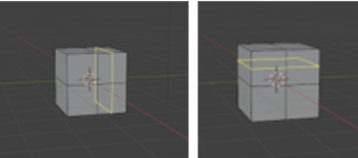

~The Loop Cut Tool~
3/17/2025
The Difference between Sub Divide and Loop Cut
Loop cut Button Verses the Hot Key
How to Use the Loop Cut Tool Button
Using the Loop Cut Tool from the Tool box
Using the Hot Key of Ctrl-R to Create Edge Loop
The Loop Cut Button
Ok, well again you do not actually see or have access to this tool unless you are in Edit mode. So, remember, Edit Mode first then Loop Cut tool.
The Difference between Sub Divide and Loop Cut
Yes, some people might be asking, “Why would I need a loop cut? Why wouldn’t I just use the sub divide, with the right click option, in Edit mode, and call it a day?”
The reason for using the loop cut tool, is because it allows you to customize your cuts more precisely to where you actually want them to fall, whereas the Subdivide option will simply slice everything up into uniform pieces. So, it just depends on what you need done, and what will work best for your own 3D modeling needs.
Loop cut Button Verses the Hot Key
You have two options to creating these loop cuts. One is to use the Loop Cut Button on the left side of the screen inside of the Tool panel. The other one is to use ctrl-r as a hot key to execute the cut. They both will act a bit differently when trying to fine tune things after wards though.
With the tool box button, you will rely on the Last operation dialog box that will show up at the bottom of the screen before you click off of the object. Clicking off of the object will make this dialog box at the bottom of the screen disappear, signally to Blender that you have completed the operation, and you are done with the tool.
When you use the hot key of ctrl-r, you click one time after creating the edge loop. This will put you into editing mode for this cut and you can use the middle mouse wheel to increase or decrease the loop cuts, and the left mouse button to slide the loop cuts up or down across the face of the object. So, don’t get confused with these differences when uses the two different methods (tool box button and the hotkey) to perform this task.
How to Use the Loop Cut Tool Button
As you already know, you can start this tool by either the tool box button, or the hot key. But what do I do after that?
Using the Loop Cut Tool from the Tool box
When you first start using this tool, you will notice this yellow loop, flipping around the object. When you click on different edges, you will notice that the loop will arrange itself in different directions.

Just find the direction that you want the loop to go in. Then you will notice the Loop Cut and Slide dialog box, which is your last operation dialog box.
Click on that little arrow to open up the dialog box and get to the different options for this tool. Just remember, if you click again off of the object, this dialog will disappear, never to show itself again.
You can change the number of cuts from here. You can also adjust the smoothness, change how the loop cuts will behave (falloff), or use the Factor slider to move the loop cut along the face of the object.
Number of Cuts Option
Here I changed the number of cuts to be 5.
Factor Option
If you slide the blue slider on the Factor option, you will see the loop cuts move down or up along the faces of the object.
Setting the Factor setting back to 0 will center the Loop cuts inside of the face of the cube again.
Smoothness Option
This is what happens if I move the slider up on the Smoothness Option.
This is what happens if you set the Smoothness to a negative number.
Falloff
By default, the Falloff is set to be an Inverse Square, but if you use the Smoothness option with the Falloff Option you can get the look of the cube to do different things.
Inverse Square
Smooth
Sphere
Root
Sharp
Linear
Using the Hot Key of Ctrl-R to Create Edge Loop
You can also use ctrl-r to create a loop cut. Click once to enter slide mode. The left mouse button will control the slide of the loop cuts, and now you can use the middle mouse wheel to increase the number of cuts.
Note- The middle mouse wheel will not work if you use the tool box button to create your loops. This only works with the hot key. If you try to use it while using the tool box button, it will only zoom the object in and out. As this is the hot key for zooming, if you are not in the Loop cut hot key.
The Even Check Box
Another interesting aspect of this Loop Cut and Slide dialog box is the check box where it says Even. The thing is on the default cube, given to you by Blender, you would never see the effects of this check box, because the shape of this object causes all the loop cuts to be even anyways.
So, we would need to do something like move one side of this cube downward to fake the look of a bevel, to see how this Even check box actually works. Here I took a cube, and started by making it taller. I just pulled the top face upward with the move tool to do this.
Now take the move tool, and in edge mode we want to select that front top edge and move it down. Do not bevel this edge, as beveling will create extra geometry and this trick will not work.
Slide your mouse upward to move the loop cut toward the top of the box. You will see that the closer our edge loop is to the slanted edge, the more it wants to follow that edge slant. You will also notice that the farther we slide the loop down the more it will try to imitate the straighter slant of the bottom edge.
But you may not want this to slant at all. This is where the check box of Even, comes in. If we check the Even check box while making this loop cut, we can then remove the slant of the edge loop all together.
Flipped Check Box Option
If you use the Flipped check box, it will flip the edge loop. Here I just used the edge loop that was illustrated above, checked the Flipped box, and it now looks like this.
Off Set Edge Loop cut Tool
This tool, might not be used as much because the same sort of thing could be done just by using the bevel tool. All this tool does, is to create 2 new edge loops, one on each side of the existing edge loop. You can select this tool by hitting the little arrow on the Loop Cut tool, to gain access to it, like this.
First Make your loop cut, and with the loop cut still highlighted in yellow, select the Off Set Edge Loop Cut tool. Pull upward with your mouse to create the two edge loops around the middle loop.
You will see, you do have access to the Offset Edge Slide dialog box. And you will see it jump up at the bottom. Then you can use the Factor slider to put the loop cuts where you want them.
Checking the Even Box here, will just space all of these edge loops evenly apart from one another.
Well, that is just about everything that you need to know for now. The Loop cut Tool is amazing, and you will find your self using it all of the time.